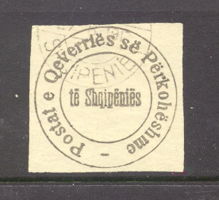
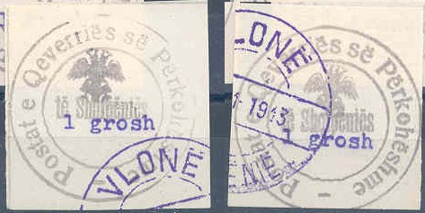
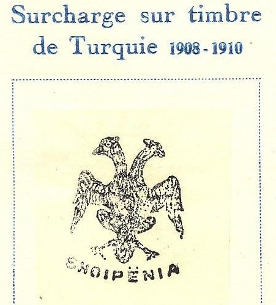
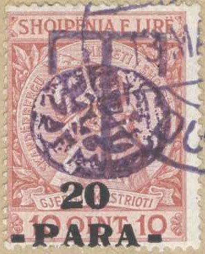

Shqipnija - Shqiperia - Albanien
Return To Catalogue - Albania 1916-1919 - Albania 1920 onwards - Due, locals etc. - Koritza local issue - Italian stamps used in Albania
Note: on my website many of the
pictures can not be seen! They are of course present in the
catalogue;
contact me if you want to purchase the catalogue.


(1 Piaster) black
Envelopes in the same design exist.
Value of the stamps |
|||
vc = very common c = common * = not so common ** = uncommon |
*** = very uncommon R = rare RR = very rare RRR = extremely rare |
||
| Value | Unused | Used | Remarks |
| 1 Pi | RR | RR | Also exists with primitive perforation |
With eagle overprint


10 pa violet 20 pa red and black 1 G black 2 G blue and violet 5 G violet and blue 10 G blue
Value of the stamps |
|||
vc = very common c = common * = not so common ** = uncommon |
*** = very uncommon R = rare RR = very rare RRR = extremely rare |
||
| Value | Unused | Used | Remarks |
| 10 pa | * | * | |
| 20 pa | * | * | |
| 1 G | * | * | |
| 2 G | ** | ** | |
| 5 G | ** | ** | |
| 10 G | ** | ** | |
Forgeries of these stamps exist:
The next forgeries have a wavy inner line below the word 'Postat' (but so does the above certified genuine stamp...). I've only seen them with the cancel 'VLONË 20-11-1913 SHQIPËNIË':

2 pa olive 2 pa on 5 pa brown 5 pa brown 10 pa green 20 pa red 1 Pi blue 1 Pi black on red 2 Pi black 2 1/2 Pi brown 5 Pi lilac 10 Pi red
Value of the stamps |
|||
vc = very common c = common * = not so common ** = uncommon |
*** = very uncommon R = rare RR = very rare RRR = extremely rare |
||
| Value | Unused | Used | Remarks |
| 2 pa | RR | RR | |
| 2 pa on 5 pa | RRR | RRR | |
| 5 pa | RR | RR | |
| 10 pa | RR | RR | |
| 20 pa | RR | RR | |
| 1 Pi blue | RR | RR | With red or blue or violet overprint: RRR |
| 1 Pi black on red | RRR | RRR | |
| 2 Pi | RR | RR | |
| 2 1/2 Pi | RRR | RR | |
| 5 Pi | RRR | RR | |
| 10 Pi | RRR | RRR | |
Surcharged with arabic text aswell (arabic 'B')
10 pa green 20 pa red 1 Pi blue
Value of the stamps |
|||
vc = very common c = common * = not so common ** = uncommon |
*** = very uncommon R = rare RR = very rare RRR = extremely rare |
||
| Value | Unused | Used | Remarks |
| 10 pa | RR | R | |
| 20 pa | RR | RR | |
| 1 Pi | RRR | RR | |
Surcharged with '10'
Picture reproduced with permission from:
http://www.sandafayre.com/html
'10' on 20 pa red
Value of the stamps |
|||
vc = very common c = common * = not so common ** = uncommon |
*** = very uncommon R = rare RR = very rare RRR = extremely rare |
||
| Value | Unused | Used | Remarks |
| 10 on 20 pa | RRR | RRR | |
I have seen a postcard of Turkey (20 pa red) with the same eagle overprint.
Reprints were made with the genuine eagle cancel, in watery black to grey colour. They were also cancelled to order with a Vlone cancel with violet or oily black ink.
(Forged overprint, reduced size)
Fournier forged overprint and forged cancel, images obtained from
a 'Fournier Album of Philatelic Forgeries'.

Attention: many forged overprints exist (among them Fournier forgeries)! For more information on these forgeries see: http://www.tughranet.f2s.com/stamps/aps/dlbeagle.htm It seems that about 95% of all the double-eagle overprints are forgeries. According to the above mentioned website maybe even many hundreds of forgers have tried to forge these stamps! This is partly due to the fact that the original stamps can be obtained very cheaply, even today.

I've been told that this is a Sperati forgery
Another fantasy overpint on a stamp of Turkey:

(Reduced size)

10 pa green and black 20 pa red and black 30 pa violet and black 1 G blue and black 2 G black
These stamps have perforation 11 1/2. The frame, value and eagle seem to have been handstamped seperately.
Value of the stamps |
|||
vc = very common c = common * = not so common ** = uncommon |
*** = very uncommon R = rare RR = very rare RRR = extremely rare |
||
| Value | Unused | Used | Remarks |
| All values | ** | ** | |

Some 'misprints': 20 pa green and black and 30 pa red and black;
the origin of these 'misprints' is quite dubious.
2 q brown and yellow 5 q green 10 q red 25 q blue 50 q violet and red 1 F brown
These stamps have perforation 14 1/2 x 14. I have seen postcards in a similar design (5 q green and 10 q red); the 5 q with inscription 'SHQIPËNIË KARTË POSTARE' and the 10 q with inscription 'SHQIPËNIË - ALBANIE KARTË POSTARE - CARTE POSTALE'.
Value of the stamps |
|||
vc = very common c = common * = not so common ** = uncommon |
*** = very uncommon R = rare RR = very rare RRR = extremely rare |
||
| Value | Unused | Used | Remarks |
| 2 q to 10 q | c | c | |
| 25 q to 1 F | * | * | |
Surcharged (1914)

Reduced size
I've seen all surcharged stamps with this cancel(?) 'ZYRA E
POSTES VOCKOPOJE' with a double headed eagle in the center
5 p on 2 q brown and yellow 10 p on 5 q green 20 p on 10 q red 1 G on 25 q blue 2 G on 50 q violet and red 5 G on 1 F brown
Value of the stamps |
|||
vc = very common c = common * = not so common ** = uncommon |
*** = very uncommon R = rare RR = very rare RRR = extremely rare |
||
| Value | Unused | Used | Remarks |
| 5 pa on 2 q to 20 pa on 10 q | c | c | |
| 1 G on 25 q to 5 G on 1 F | * | * | |
Overprinted '7 Mars 1461 RROFTE MBRETI 1914'

2 q brown and yellow 5 q green (violet overprint) 10 q red 25 q blue (violet overprint) 50 q violet and red 1 F brown
Value of the stamps |
|||
vc = very common c = common * = not so common ** = uncommon |
*** = very uncommon R = rare RR = very rare RRR = extremely rare |
||
| Value | Unused | Used | Remarks |
| All values | ** | ** | |
These stamps overprinted with 'TAKSE' and 'T' are postage due stamps. Some of these stamps (2, 5 and 10 q unsurcharged and all the surcharged ones) were overprinted with an ellipse with an arabic text. They were used locally in 1915. The surcharge exists in red, blue or black.

(Local overprint for Scutari on a postage due stamp with 'T'
overprint)
Another overprint exists for Scutari (see picture below), I've seen it on the values 5 p on 2 q brown and yellow, 10 p on 5 q green, 20 p on 10 q red, 1 G on 25 q blue and 2 G on 50 q violet and red. I've only seen this overprint in red.


(Other overprint for Scutari)
Overprinted 'POSTE D'ALBANIE' in a circle with arabic text and
star in the center; issued for the muslim party in Valona (1914).
All unsurcharged and surcharged stamps seem to exist with this
overprint.


{kind=link}
{kind=link}
{kind=link}
{kind=link}
{kind=link}